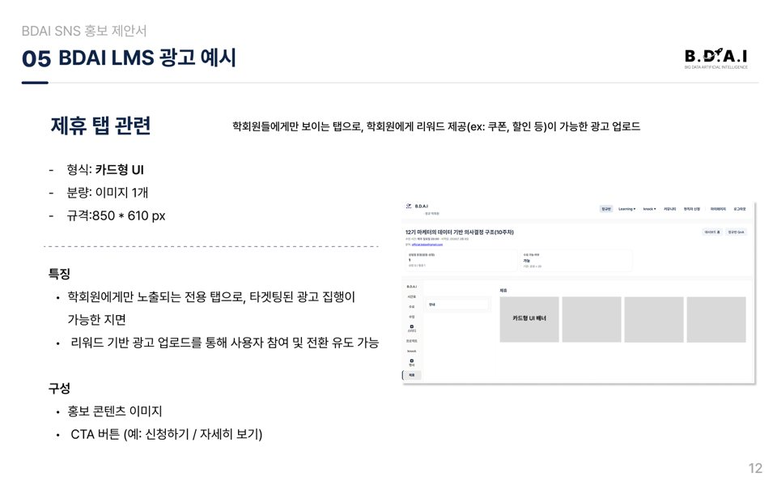
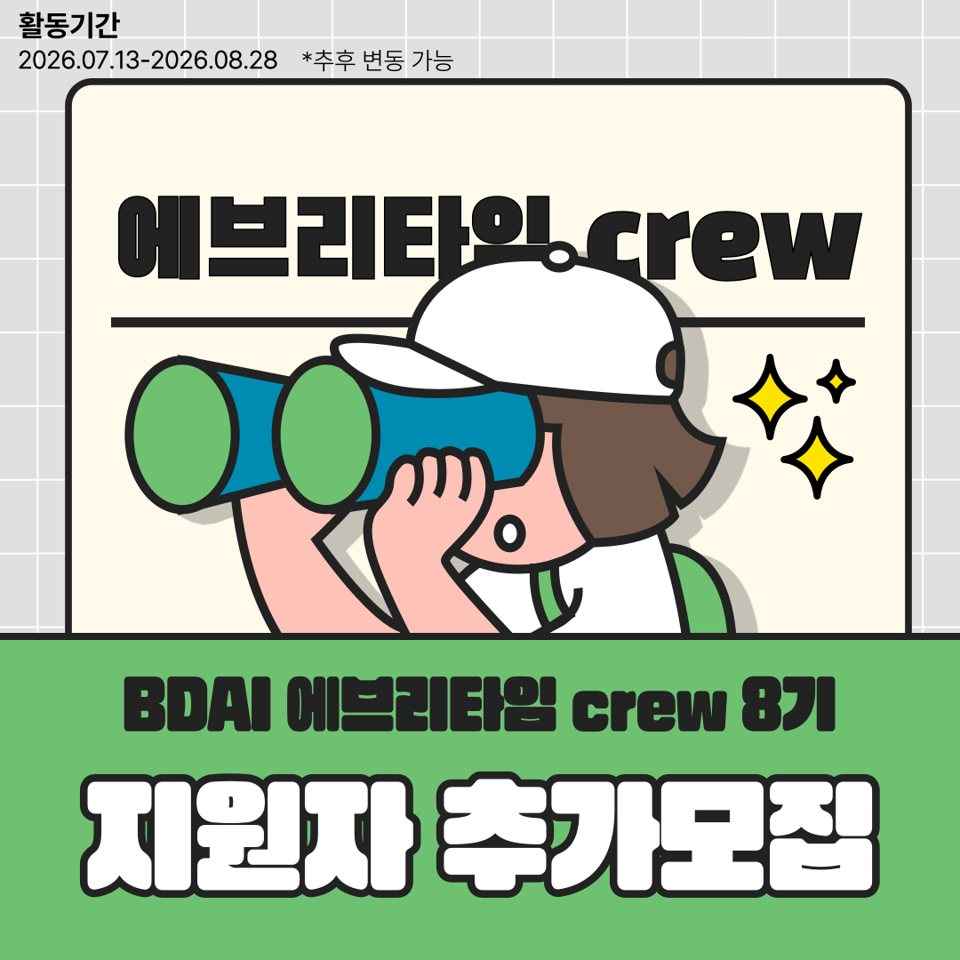
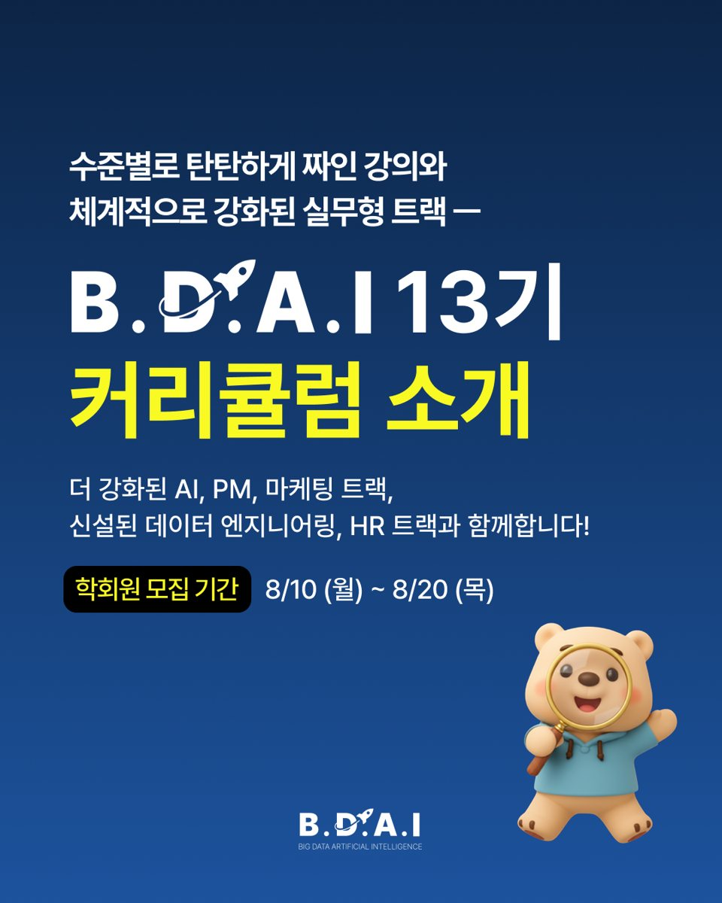
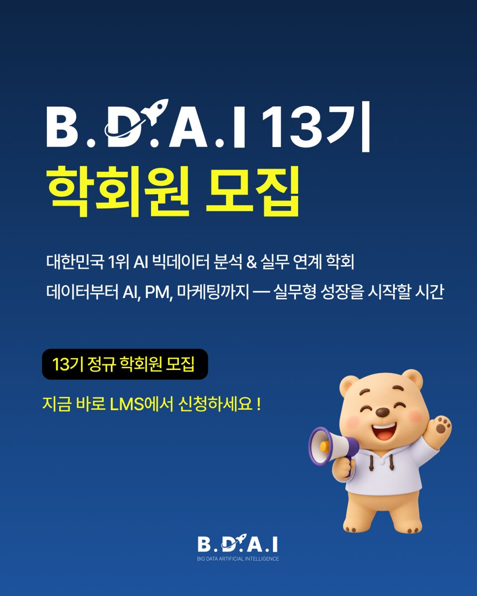
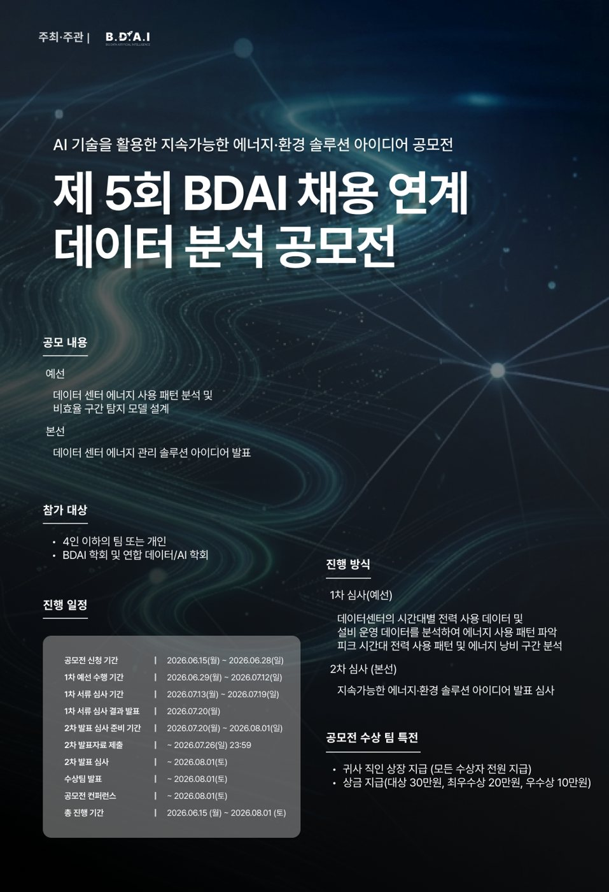

배너 클릭률 · LMS 전체 기준
BDAILMS 광고 지면01
사이트 이용 흐름을 기능 제안과 광고 운영으로 연결하기
새 LMS의 사용 가이드와 기능을 제안하고, 지면별 이용과 광고 반응을 구분해 기업 제안과 실제 집행 운영으로 연결했습니다.
16개사광고주
운영 결과무료 게재 포함
25건누적 집행
운영 결과유료 매출 실적과 구분
기획 기여사용 가이드 · 기능 제안 · 지면 검토 · 기업/개발팀 조율
사용자 행동과 운영 조건을 함께 보며, 팀이 무엇부터 바꿀지 정리하는 일을 좋아합니다. BDAI에서는 LMS·모집·행사를 운영하며 여러 팀과 기업의 요구를 조율했고, 데이터 분석 프로젝트에서는 처음 세운 진단을 검증해 실험과 운영 기준으로 구체화했습니다. 확인한 사실과 가설을 구분해 선택의 이유를 설명합니다.
BDAI에서 운영한 프로젝트 4개와 데이터 분석 프로젝트 3개를, 문제 정의에서 실행·검증으로 이어지는 기획 관점으로 정리했습니다.
데이터·AI 대학생 학회에서 직접 운영한 캠페인입니다. 수치는 개인 실적이 아니라 캠페인 단위 결과입니다. · 2026.02–08

BDAILMS 광고 지면01
새 LMS의 사용 가이드와 기능을 제안하고, 지면별 이용과 광고 반응을 구분해 기업 제안과 실제 집행 운영으로 연결했습니다.
운영 결과무료 게재 포함
운영 결과유료 매출 실적과 구분
기획 기여사용 가이드 · 기능 제안 · 지면 검토 · 기업/개발팀 조율


BDAI대학 커뮤니티 홍보단 · 3개월 운영02
과거 유입과 현재 학회원 규모를 함께 살펴 집중 학교를 정하고, 모집 대상·공지·참여 혜택을 조정해 3개월 운영까지 이어갔습니다.
의사결정미확보 우선순위 10개교 중
수행 범위선발 후 활동 관리
기획 기여대상 학교 선정 · 모집 방식 조정 · 크루 관리



BDAI정규 학회원 모집 · 45일03
데이터·운영관리·교육기획팀의 준비 사항을 맞추고, 15개 콘텐츠와 9개 채널의 일정 및 광고 집행 판단을 관리했습니다.
수행 범위콘텐츠·채널 일정 관리
전체 결과모든 유입 경로 합계
기획 기여제작 일정 · 광고 집행 판단 · CRM 운영 협업

공모전 33 / 목표 30팀110%

해커톤 202 / 목표 300명67.3%
BDAI공모전 · 해커톤 홍보04
공모전·해커톤의 랜딩페이지와 홍보물을 만들고, 참가자의 시험 일정과 기업 요구를 조율하며 모집 진행과 결과를 관리했습니다.
전체 결과목표 30팀
전체 결과목표 300명
두 행사는 대상과 목표 단위가 달라 직접 비교하지 않음
기획 기여랜딩페이지/홍보물 · 진행 공유 · 일정 조율 · 결과 검토
코드잇 데이터 분석가 부트캠프에서 수행한 분석과 실험 설계입니다. 실제 서비스 개선 성과와 구분했고, A/B 테스트는 실행하지 않았습니다. · 2026.02–08
구독 서비스팀 프로젝트 5인 · 3주05
플랜별 비교에서 설명 변수가 나오지 않자 6개월 플랜 내부의 유지·이탈 집단으로 비교 단위를 바꾸고, 결제 후 28일 개입 실험을 설계했습니다.
관측6개월 플랜 · 전 기간 첫 만료자 기준
관측유지·이탈 집단 활동률 격차 · 5주차 최대 6.93%p
기획 기여비교 단위 전환 · 핵심 구간 탐색 · A/B 테스트 설계
설계 · 미실행결제 후 28일 개입 A/B 테스트
채용 플랫폼1인 프로젝트 · 전 과정 단독06
활성화 실패라는 첫 진단을 기각하고, 살아 있는 구직 수요와 공고가 연결되지 않는 구조로 문제를 바꾼 뒤 개선안과 검증 계획을 설계했습니다.
관측등록 공고 31,403건 중 30일 안에 지원을 받은 비율
보정 추정성향점수 매칭 후 차이 · 인과효과로 확정하지 않음
기획 기여첫 진단 검증 · 공급/수요 구조 분석 · 개선 실험 설계
설계 · 미실행실험 설계서까지 작성 · A/B 테스트는 실행하지 않음
리워드 광고3인 팀 · 선별 시스템 단독07
성과가 쌓이기 전에 사라지는 광고를 모두 같은 순서로 검토하기 어려워, 문구 기반 등급과 경보를 만들고 후향 평가했습니다.
후향 평가홀드아웃 광고 2,298건 기준
관측전체 광고 9,369건 기준 · 4.13배와 모집단 다름
기획 기여운영 문제 정의 · 등급 정책 · 검증 및 적용 실험 설계
설계 · 미실행A/B 테스트는 설계까지 · 실제 운영 적용 아님
EXPERIENCE → ROLE
프로젝트마다 결과 수치보다 어떤 문제를 정의했고, 무엇을 다음 행동으로 바꿨는지 먼저 보여줍니다.
채용 플랫폼 프로젝트에서는 전환율 상승만 보고 활성화가 개선됐다고 결론 내리지 않았습니다. 절대 지원자와 신규 공고 감소를 함께 보고 문제를 연결 기회의 부족으로 바꿨습니다.
문제 재정의 과정 ↗학회원 모집에서는 광고 판단 기준을, 광고 프로젝트에서는 검토 우선순위 등급을 만들었습니다. 숫자를 설명에 머물게 하지 않고 다음 행동의 조건으로 정리했습니다.
운영 기준 설계 ↗LMS에서는 개발팀과 기업 사이의 기능·소재·일정을, 행사에서는 참가자의 시험 일정과 기업 요구를 조율했습니다. 기획 이후 실제 운영까지 이어지는 조건을 챙겼습니다.
서비스 운영과 조율 ↗학회에서 여러 팀과 기업이 참여하는 프로젝트를 운영했고, 데이터 분석 프로젝트에서는 문제를 다시 정의하고 실험과 운영 기준으로 구체화했습니다.
2026.02 ~ 2026.08
BDAI 8기 마케팅팀
데이터·AI 대학생 학회
LMS 사용 가이드와 기능 제안, 광고 지면 운영, 학회원 모집, 대학 홍보단, 기업 공모전·해커톤을 진행했습니다. 개발·데이터·운영팀과 외부 기업의 일정과 준비 사항을 조율했습니다.
2026.02 ~ 2026.08
코드잇 데이터 분석가 부트캠프
스프린트 14기
구독 이탈, 채용 플랫폼 매칭, 신규 광고 검토 문제를 분석하고 개선안과 검증 계획으로 정리했습니다.
2025.07
웹예능 「잠깐만」 촬영감독
외부 제작
지방 촬영 대관이 무산될 뻔한 상황에서 사전 허가와 현장 운영 계획을 정리해 설득하고 촬영을 마쳤습니다
2025.03
홍보팀
우바미디어네트워크
스케치 코미디 촬영과 메이킹 필름 제작
2025.02
홍보팀
인천대학교 축구부 인프런트
기존 콘텐츠의 반응을 비교해 선수 인터뷰 대신 경기 하이라이트와 밈 재해석으로 방향을 바꿨습니다
2023.12
에디터
독립영화 잡지 「메이폴」 3호
비평글 작성과 영화사 진진 인터뷰 진행
2023.08 참여 · 2024.02 팀장
대본팀장
영화 콘텐츠 크루 온더플로어
비평글과 팟캐스트 대본 약 10회 작성. 영화관 두 곳에 협업을 제안해 홍보 콘텐츠와 티켓 지원을 받았습니다
2024.03 ~ 2027.02 졸업 예정
미디어커뮤니케이션학과
인천대학교 · 복수전공
AI를 활용한 댓글 분석 캡스톤 수행
2020.03 ~ 2027.02 졸업 예정
전기공학과
인천대학교 · 주전공
졸업 과제로 자동화 식물 케어 서비스를 기획하고 직접 구현
2025.03
영상 공모전 장려상
퀴즈노스
2024.09
정주대학 프로그램 우수상
인천대학교
문제와 정책
실험과 측정
분석과 협업
노션에서 자체 LMS로 전환한 뒤 사용 가이드를 만들고 VOD와 현직자 소통 기능을 제안했습니다. 이용량과 체류가 높은 지면, 실제 광고 클릭이 높은 지면을 구분해 검토하고 기업 제안부터 소재·일정 조율, 게재까지 운영했습니다. 16개사·25건은 무료 게재를 포함한 기록입니다.
전체 분석과 근거 보기 ↗BDAI · 대학 커뮤니티 홍보단 · 3개월 운영대학 커뮤니티에서 학회를 알릴 홍보단을 모집·운영했습니다. 과거 유입과 현재 학회원 수를 살펴 미확보 우선순위 10개교 중 7개교에 집중했고, 공지에 학교명을 넣고 예비 학회원까지 모집 대상을 넓혔습니다. 전체 확보 학교 42→55개교는 팀 전체 결과이며 개별 조치의 기여도와 구분합니다.
전체 분석과 근거 보기 ↗BDAI · 정규 학회원 모집 · 45일45일 동안 데이터팀·운영관리팀·교육기획팀과 콘텐츠 준비 일정을 맞추고 15개 콘텐츠와 9개 채널을 운영했습니다. 업로드 후 3일·프로필 방문 98회 이상을 광고 판단 기준으로 사용했고 데이터팀의 발송 대상 기준을 반영해 CRM을 협업했습니다. 1,021명은 캠페인 전체 결과입니다.
전체 분석과 근거 보기 ↗BDAI · 공모전 · 해커톤 홍보데이톤 공모전과 슈퍼브 해커톤의 모집 홍보와 진행 공유를 맡았습니다. 슈퍼브는 대학 시험 기간과 일정이 겹치는 문제를 기업 측과 조율했습니다. 데이톤은 목표 30팀에 33팀, 슈퍼브는 목표 300명에 202명이 참여했으며 서로 다른 행사 조건 안에서 결과를 따로 회고했습니다.
전체 분석과 근거 보기 ↗구독 서비스 · 팀 프로젝트 5인 · 3주6개월 플랜의 첫 만료 이탈률은 83.79%였지만 플랜끼리 비교해서는 원인을 설명할 지표가 나오지 않았습니다. 같은 플랜 안의 유지·이탈 집단으로 비교군을 바꾸자 2주차부터 활동률 격차가 열렸고 5주차에 6.93%p로 가장 커졌습니다. 이를 근거로 결제 후 28일 개입 실험을 설계했으며 실행 결과는 없습니다.
전체 분석과 근거 보기 ↗채용 플랫폼 · 1인 프로젝트 · 전 과정 단독D+30 지원 전환율은 15.7%에서 53.8%로 올랐지만 절대 지원자는 323명에서 71명으로 줄었습니다. 전환율만 보고 활성화 개선으로 결론 내리지 않고, 공고와 구직 수요가 만날 기회의 감소로 문제를 다시 정의했습니다. 북마크 등 개선 후보를 평가하고 실험을 설계했으며 실제 서비스 적용 결과는 없습니다.
전체 분석과 근거 보기 ↗리워드 광고 · 3인 팀 · 선별 시스템 단독첫 클릭 기준 신규 광고는 하루 중앙값 254개이고 분석 광고의 57.6%는 클릭 활동 기간이 3일 이내였습니다. 성과가 충분히 쌓이기 전에 검토 우선순위를 정하도록 광고 문구 기반 S~D 등급과 경보를 설계했습니다. 후향 평가는 수행했지만 실제 운영 적용과 A/B 테스트 결과는 없습니다.
전체 분석과 근거 보기 ↗